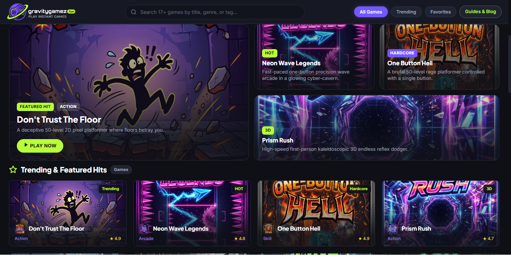
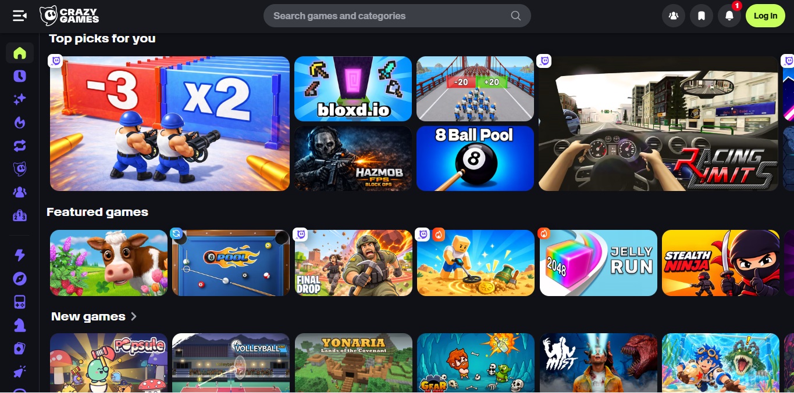
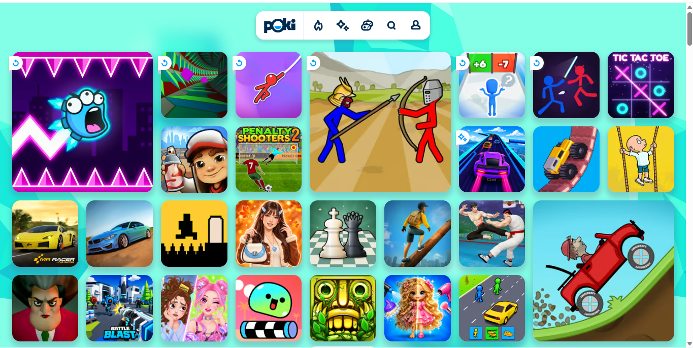
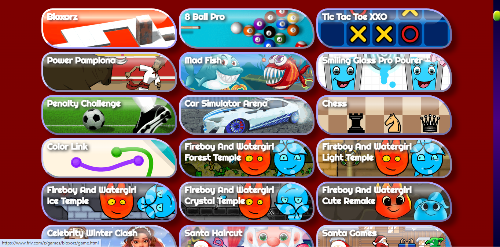
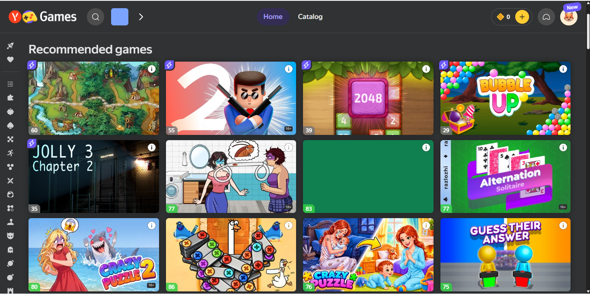

Online Games for Free: Play the Best Free Online Games in Your Browser (2026 Guide)

Quick Answer: Where Can You Play Online Games for Free?
You can play online games for free on CrazyGames, GravityGamez.fun, Poki, Friv, and Yandex Games. All five run directly in your web browser, so there is nothing to download, install, or pay for. Open the site, pick a game, and start playing on a PC, laptop, tablet, or phone.
Why Free Online Games Are More Popular Than Ever
Not long ago, playing a game meant buying a disc or downloading gigabytes of data. Today, a huge library of free online games is a single click away. Modern browser technology (HTML5 and WebGL) lets games run smoothly in Chrome, Safari, Edge, and Firefox, with no plugins required.
People choose to play free online games for a few simple reasons:
- Zero cost: Games are supported by ads, so you never pay to play.
- No installation: No storage space, no updates, no waiting.
- Works on almost any device: A low-end laptop or an older phone can still handle most browser games.
- Quick sessions: Many games take two minutes, which suits a break at school, work, or home.
- Huge variety: Racing, puzzle, action, shooting, sports, strategy, and multiplayer games are all available.
Whether you are in the US, UK, Pakistan, India, Canada, Australia, or anywhere else with an internet connection, you can start playing in seconds.
The 5 Best Websites for Online Games for Free
1. CrazyGames

CrazyGames is one of the best-known browser gaming platforms in the world. It hosts a large catalog of free games, from casual puzzles to action titles and popular .io multiplayer games you can play with others online.
Best for: Multiplayer and .io games, plus a wide variety of genres.
Why people like it:
- Browser-based, no download needed
- Large library with clear categories and tags
- Many multiplayer and 2-player games
- Works on desktop and mobile
If you want a big, polished platform with something for everyone, CrazyGames is an excellent place to start.
2. GravityGamez.fun
GravityGamez.fun is an emerging free online games website built for players who want instant fun without the clutter. It is a newer name in the browser gaming space, and that is part of its appeal: a fresh platform focused on quick loading, easy navigation, and games you can jump into right away.
Best for: Players who want a fresh, lightweight site to discover new free games.
Why it is worth bookmarking:
- Free to play, with no downloads and no sign-up required to start
- Simple layout designed for quick browsing
- Built for fast access on desktop and mobile browsers
- A growing collection, so there is always something new to try
Established giants are great, but newer platforms like GravityGamez.fun often bring a fresh approach and a more focused experience. If you like discovering a site before everyone else does, add it to your bookmarks.
3. Poki

Poki is another top name for free games online, known for its clean design and strong lineup of popular titles. It is a favorite for casual players and families because of its easy-to-use interface and its mix of single-player and multiplayer games.
Best for: Casual gaming, families, and polished mobile-friendly play.
Why people like it:
- Instant play in the browser
- Well-organized categories such as racing, puzzle, sports, and adventure
- Smooth experience on phones and tablets
- Regularly updated with new games
4. Friv

Friv has been a familiar name in free online gaming for many years. It is especially loved for simple, fun, easy-to-learn games, which makes it a favorite among younger players and anyone who likes quick casual play.
Best for: Simple, classic-style casual games and quick play sessions.
Why people like it:
- Easy-to-understand games for all ages
- Short play sessions
- Familiar, nostalgic feel for long-time browser gamers
Tip: Several websites use the "Friv" name, so check that you are on the site you intend to visit and be careful with pop-ups or downloads.
5. Yandex Games

Yandex Games is a large instant-games platform with a huge library of browser-based games that load quickly on desktop and mobile. It supports many languages and offers a wide range of casual, arcade, puzzle, and strategy titles.
Best for: Instant-loading casual games and a big international catalog.
Why people like it:
- Fast loading, instant-play games
- A large and varied game collection
- Multi-language support
- Works across devices
Quick Comparison Table
| Website | Best For | Download Needed? | Cost |
|---|---|---|---|
| CrazyGames | Multiplayer and .io games | No | Free |
| GravityGamez.fun | Fresh, fast-loading discovery | No | Free |
| Poki | Casual and family-friendly play | No | Free |
| Friv | Simple, classic casual games | No | Free |
| Yandex Games | Large instant-play library | No | Free |
How to Choose the Right Site to Play Free Online Games
The best site depends on what you want to play:
- Want multiplayer fun? Try CrazyGames.
- Want to find something new? Check out GravityGamez.fun.
- Playing with kids or on a phone? Poki is a smooth, easy option.
- Want simple, nostalgic games? Friv is a good fit.
- Want a huge library with instant loading? Yandex Games is worth a look.
The good news is that you do not have to choose just one. Because all of these sites are free, you can test each and keep your favorites.
Types of Free Online Games You Can Play
Across these platforms, you will find almost every genre:
- Action and shooting games: fast reflexes and quick rounds
- Racing and driving games: cars, bikes, and stunt tracks
- Puzzle and brain games: logic, matching, and word challenges
- Sports games: football, basketball, cricket, and more
- Strategy and tower defense: plan, build, and defend
- .io multiplayer games: compete with players around the world
- Adventure and escape games: explore and solve mysteries
- Kids' and casual games: simple, colorful, and easy to learn
Tips for the Best Free Online Gaming Experience
- Use an updated browser: Chrome, Edge, Firefox, and Safari all run HTML5 games well.
- Check your connection: A stable internet connection helps, especially for multiplayer games.
- Close extra tabs: This frees up memory and keeps games smooth.
- Use headphones: Many games have great sound design.
- Stay safe online: Never download files from pop-ups, and avoid sharing personal information in chat features.
- Take breaks: Gaming is best when it is balanced with rest and other activities.
Are Free Online Games Safe?
Reputable platforms run games in the browser, which means you do not need to install anything on your device. To stay safe, stick to well-known sites, avoid clicking suspicious ads, and never download software that a game site asks you to install. Parents should supervise younger children and check each platform's chat and privacy features.
Frequently Asked Questions
What are the best websites for online games for free?
Top options include CrazyGames, GravityGamez.fun, Poki, Friv, and Yandex Games. All offer free, browser-based games with no download required.
Can I play free online games without downloading anything?
Yes. Most free online games use HTML5, so they run directly in your browser on desktop, tablet, and mobile.
Are free online games really free?
Yes. These platforms are generally supported by advertising, so you can play without paying.
Can I play free online games on my phone?
Yes. Most modern browser games work on both Android and iOS devices through a standard mobile browser.
Do I need an account to play?
Usually not. Most games can be played instantly, though some sites offer optional accounts to save progress.
What is the best free online games site for multiplayer?
CrazyGames is widely known for multiplayer and .io games, but you can find multiplayer options on several of the sites above.
Final Thoughts
If you have been searching for online games for free, you now have five great places to start. CrazyGames, Poki, Friv, and Yandex Games are well-established options, while GravityGamez.fun is an emerging platform worth bookmarking for fresh, fast, free browser gaming. Pick a site, choose a game, and start playing right now. No downloads, no payments, just fun.
Ready to play?
Visit GravityGamez.fun and jump into free online games instantly.